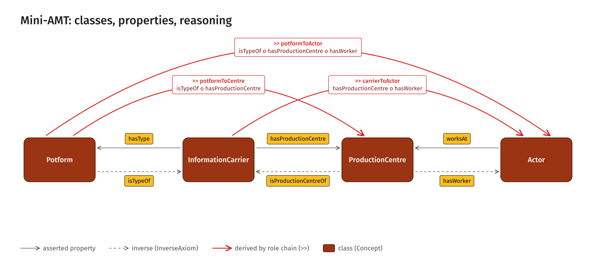
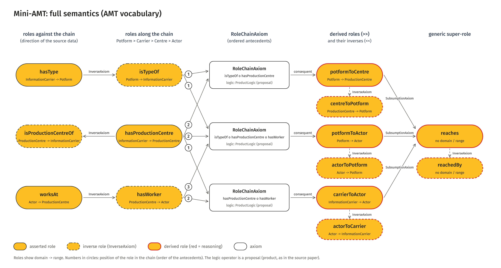
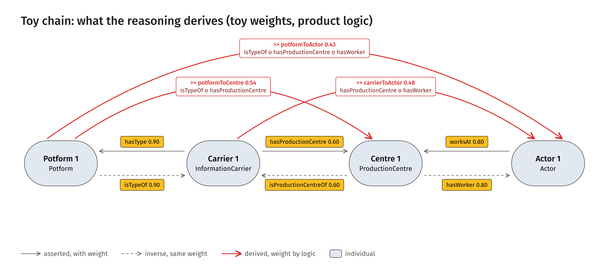

The Mini-AMT model in the style of the case figures. The figures in the documentation pages (Model, Reasoning, Chains) are the matplotlib versions and are developed there; this page shows the same content for presentations and papers.

Simple view. Classes, asserted properties with their inverses, and the three derived properties (red). SVG · docs version (matplotlib)

Full semantics. Roles with domain and range, InverseAxiom, RoleChainAxiom with ordered antecedents, SubsumptionAxiom. SVG · docs version (matplotlib)

Toy reasoning. The same picture on the abstract toy chain, with toy weights and product logic. SVG · docs version (matplotlib)